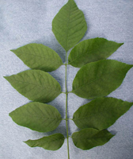

How to mark a tree
First we need to identify an ash tree.
Leaves
Leaves are compound and composed of 5-11 leaflets. Leaflet margins may be smooth or toothed. The only other oppositely branched tree with compound leaves is boxelder, which almost always has three to five leaflets.
White ash

Green ash
